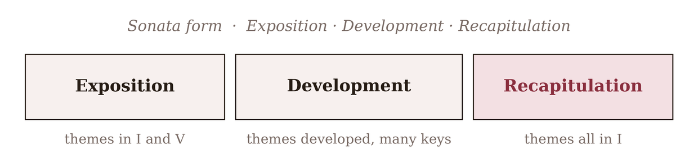

For roughly two centuries, one form stood above all others in Western instrumental music: sonata form, the shape of the first movement of almost every symphony, sonata, string quartet, and concerto from Haydn to Brahms and well beyond. It is the grandest and most dramatic application of everything in this part — themes, keys, development, departure and return — welded into a single large argument. It is also genuinely complex, the work of a lifetime to master, and composing a full one lies beyond the intermediate scope of this book. So this chapter is a light-touch look: enough to let you hear sonata form, follow it in the scores you listen to, and understand why it matters — not a manual for writing one. Learning to recognize it is itself a large step, and it will change how you hear a great deal of music.
26.1Sonata form as drama
The key to sonata form is to hear it as a drama in three acts, built on tonal tension. It presents two contrasting ideas in two different keys — setting up an opposition, a “home” and an “away.” It then throws those ideas into a turbulent middle section where they are broken apart, combined, and driven through many keys — the conflict. And finally it brings them both back, now reconciled in the home key — the resolution. The whole form is the story of a tension established, intensified, and resolved, played out over the scale of an entire movement. Everything you learned about a dominant resolving to a tonic (Chapter 12), and about modulating away and home (Chapter 22), operates here across ten or fifteen minutes instead of two chords.
26.2The three parts
The three acts have names: Exposition, Development, and Recapitulation.

The heart of the form, and the thing to hold onto, is visible in Figure 26.1: the second theme is presented away from home in the exposition, and at home in the recapitulation. That single change — the second theme coming home — is the tonal resolution the whole movement exists to achieve. Everything else serves it.
26.3The exposition
The exposition lays out the material and the tension. It contains, in order: a first theme (or theme-group) in the tonic, firmly establishing home; a transition that builds energy and modulates away; a second theme in the new key — the dominant for a major-key movement, the relative major for a minor-key one — usually more lyrical, contrasting in character; and a closing section that cadences firmly in the new key. By the end of the exposition, two keys and two characters have been set in opposition, and the music sits, unresolved, away from home. (In the Classical style the whole exposition is typically repeated, to fix the material and the tension in the listener’s ear.)
26.4The development
The development is the storm at the centre. It takes the themes from the exposition and develops them — the craft of Chapter 19 writ large — fragmenting them, sequencing them, combining them, and driving them restlessly through a series of keys, far from the stability of home. This is the most harmonically adventurous and emotionally intense part of the form, and the most freely composed; there is no fixed plan, only the sense of tension mounting and material being worked. It ends with a passage called the retransition, which settles onto the home dominant and prepares — with mounting expectation — the return.
26.5The recapitulation
The recapitulation is the resolution, and it is where sonata form reveals its genius. The themes return in their original order — first theme, transition, second theme, closing — much as in the exposition, with one all-important difference: the second theme, which was “away” in the dominant, now appears in the tonic. Everything comes home. The tonal tension the exposition set up — two themes in two keys — is resolved by presenting both themes in the one home key. This is why the recapitulation is not mere repetition but genuine arrival: the same material, but the conflict of keys is dissolved, and the movement can finally rest. A coda often follows, a closing section that confirms the tonic and rounds off the whole drama.
26.6The summit — and the ceiling
Sonata form is the summit of the tonal forms because it integrates everything: memorable themes (Part 3), functional harmony and cadences (Part 2), modulation (Chapter 22), motivic development (Chapter 19), and the departure-and-return that underlies all form (Chapters 22–25), all deployed across a span long enough to sustain a real dramatic argument. It is one of the great achievements of Western art.
It is also where this book, honestly, stops teaching you to compose — and that is a deliberate choice, not an oversight. Writing a convincing sonata-form movement is an advanced undertaking, demanding a command of long-range pacing and thematic argument that is a whole further course of study. What you can now do is enormous: you can hear sonata form, follow its three acts and its tonal drama in any first movement you listen to, and understand what the composer is doing and why. And the forms this book does equip you to compose — binary, ternary, rondo, and variations — are more than enough for real, complete, satisfying music. When you are ready to climb toward sonata form yourself, Appendix D points to the books that take up the ascent.
In MuseScore
Because sonata form is something to understand before it is something to write, the most valuable exercise here is analytical — following the form in a real score rather than composing one.
- Open a real first movement. Import a MusicXML file of a simple Classical sonata movement (Clementi’s sonatinas and easy Mozart are ideal, and freely available), or find one already in MuseScore’s format.
- Mark the sections with rehearsal marks (Ctrl+M): find where the Exposition ends (often a repeat sign), where the Development begins its wandering, and where the Recapitulation brings the first theme back in the tonic.
- Track the keys. Note the key of the first theme (the tonic) and the second theme (the dominant) in the exposition — then find the second theme in the recapitulation and confirm it has come home to the tonic. Hearing that one change is hearing the point of sonata form.
- Play the exposition and the recapitulation of the second theme back to back and listen for the difference: away, then home.
Try it: take the second theme of any sonata-form exposition you can find, note its key, and then locate its return in the recapitulation. The theme is the same; the key has changed to the tonic. That transposition home, across the whole span of a movement, is the resolution the entire form is built to deliver — and now you can hear it.